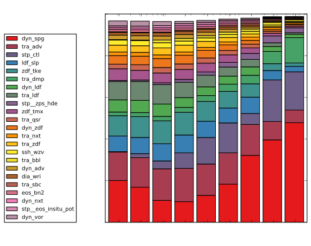
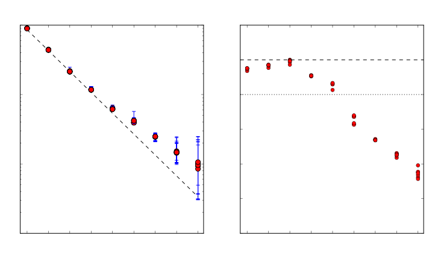

MOM5, MOM6, and NEMO performance overview
Marshall Ward
National Computational Infrastructure

Outline (DELETE ME)
- Model listing
- Experiment overview
- Init + Loop runtime comparison
- Estimated performance
- Subroutine breakdown
- Barotropic (vs baroclinic) scaling
- Sea ice scaling
- Current scaling limits
- Future proposals (e.g. 0.03°)
Model/expt descriptions
Ocean timesteps

Sea ice timesteps

Init and Mainloop runtimes
Subroutine scalings
NEMO subroutine comparison
NEMO: Surface pressure gradient

NEMO: Tracer advection
NEMO: Runtime diagnostics

NEMO: Tracer relaxation (damping)

Vectorisation